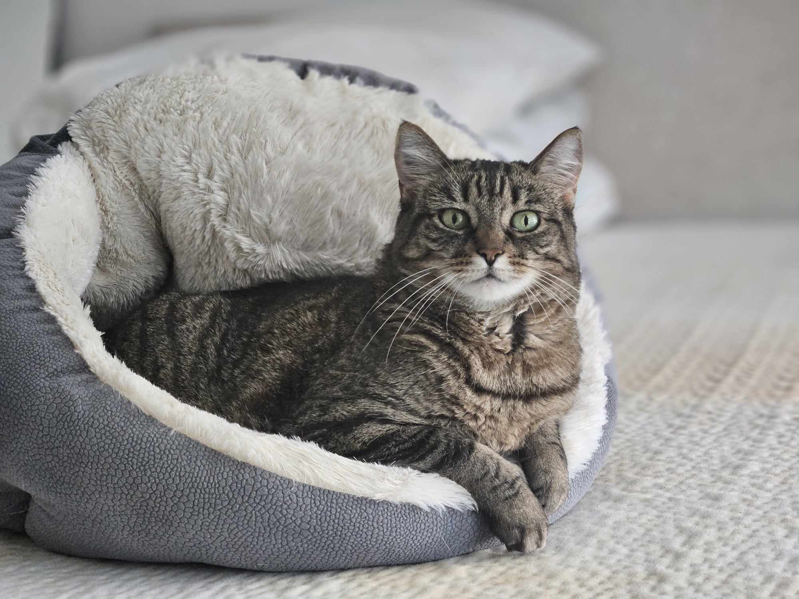

Originally born and raised in Vermont, I enlisted in the Military and found myself in North Carolina. After traveling the world for a handful of years, my wife and I decided that it was time for me to move on from the Marine Corps. I went through a training course put on by Microsoft to set myself up for a career in software. We moved to Tampa, Florida, and have been enjoying the sun ever since!
I spent some as a Sales Development Representative, moved to a small business CSM position, and now work as a Technical CSM for a music festival and ticketing software company. I look forward to continuing to develop my skillsets in handling customer relationships, as well as deepening my understanding of software and website development.
One of of my favorite pastimes is finding new places to watch the sunset with my wife, Harlie
Koda is our young-at-heart cat that has been a part of the family since my wife was in high school. She certainly livens up the apartment!
I believe we should never stop learning. Recently, I've been putting most of my learning efforts into reading books that will help me continue to grow professionally and relationally.
Below are a handful of titles that I recently studied
Being in the software world, I believe in continous skill development as well. A lot of my learning has been specific to my job role as we utilize a lot of propietary software systems to support our customers. I do enjoy learning outside of that for my own sake!
Below are a handful of courses that I have recently or am currently pursuing